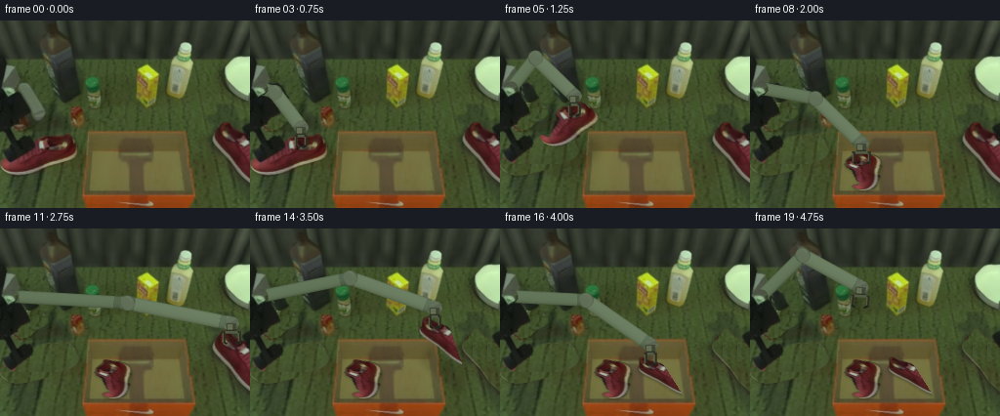
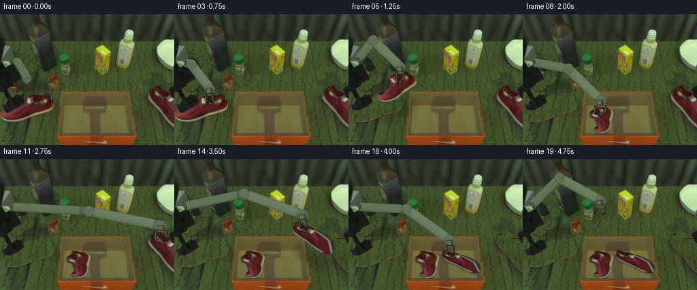

CODING AGENTS AS PIXEL WORLD MODELS
traex/GPT-6.1-Sol · common50_0048
点击播放 · 原生 RGB 像素
逐轮保存的候选
回放视频、检查图与代码变化。
每份候选均可单独播放。实际图片检查记录在下方工具轨迹中。
候选 01播放与检查图
点击播放 · 原生 RGB 像素

展开代码变化
--- 上一保存版本
+++ 本次保存版本
@@ -0,0 +1,234 @@
+"""Fixed-camera, texture-preserving pick-and-place using local RGB geometry."""
+from pathlib import Path
+import math
+import numpy as np
+from PIL import Image, ImageDraw, ImageFilter
+from scipy.ndimage import map_coordinates, distance_transform_edt
+import artifact_io
+
+ROOT=Path(__file__).resolve().parent
+SRC=np.asarray(Image.open(ROOT/'first_frame.png').convert('RGB'))
+H,W=SRC.shape[:2]
+Y,X=np.mgrid[:H,:W]
+
+def polygon(points):
+ im=Image.new('L',(W,H)); ImageDraw.Draw(im).polygon(points,fill=255)
+ return np.asarray(im).astype(float)/255
+
+def softened(mask,sigma=.45):
+ return np.asarray(Image.fromarray(np.uint8(mask*255)).filter(ImageFilter.GaussianBlur(sigma))).astype(float)/255
+
+def sample(a,x,y):
+ if a.ndim==2:return map_coordinates(a,[y,x],order=1,mode='nearest')
+ return np.stack([map_coordinates(a[:,:,c].astype(float),[y,x],order=1,mode='nearest') for c in range(a.shape[2])],-1)
+
+def blend(dst,col,alpha):
+ return dst*(1-alpha[:,:,None])+col*alpha[:,:,None]
+
+# Pixel-coordinate outlines of the two shoes (including their original soles).
+Lpts=[(66,116),(71,116),(73,119),(76,123),(79,129),(80,133),(78,138),(73,142),(66,146),(56,149),(45,153),(33,156),(23,158),(14,158),(8,156),(4,153),(1,150),(0,144),(3,141),(7,142),(13,146),(18,140),(23,136),(28,132),(33,129),(34,123),(38,119),(47,117),(57,117)]
+Rpts=[(229,103),(233,103),(237,108),(242,111),(247,114),(252,118),(255,122),(255,166),(250,161),(245,156),(242,151),(237,145),(234,140),(229,135),(225,131),(221,127),(218,123),(217,119),(218,116),(223,113),(225,108)]
+LM=softened(polygon(Lpts)); RM=softened(polygon(Rpts))
+# Forearm, wrist and tool; stationary mounting hardware is retained.
+AM=polygon([(19,64),(27,63),(32,66),(38,77),(43,86),(48,91),(48,96),(44,100),(36,102),(32,98),(29,88),(23,78),(20,73)])
+GM=polygon([(36,97),(43,98),(32,108),(28,111),(22,112),(17,109),(18,103),(22,99),(28,97)])
+MOV=softened(np.maximum(AM,GM),.65)
+
+# Clean exposed table by copying undisturbed nearby tabletop textures. Boundary
+# interpolation retains the original lighting, rather than inventing a new scene.
+def table_under(mask,kind):
+ if kind=='arm':
+ sx=58+(X%22); sy=Y.copy()
+ # This sample range is clean between the source forearm and static props.
+ sx=np.where(Y>83,94+(X%22),sx)
+ elif kind=='left':
+ sx=43+((X+7)%38); sy=160+((Y-118)%29)
+ else:
+ sx=199+((X-213)%15); sy=Y
+ tex=SRC[np.clip(sy,0,H-1),np.clip(sx,0,W-1)].astype(float)
+ if kind=='left':
+ # The table is slightly brighter toward the rear.
+ tex+=np.maximum(0,150-Y)[:,:,None]*np.array([.04,.04,.025])
+ return tex
+
+CLEAN=blend(SRC.astype(float),table_under(MOV,'arm'),MOV)
+LEFT_CLEAN=table_under(LM,'left'); RIGHT_CLEAN=table_under(RM,'right')
+
+# Copy full shoes with a planar camera projection: the local rigid length is
+# unchanged; apparent scale shrinks as each shoe moves away from the camera.
+P=np.diag([1.,.6]); Pinv=np.linalg.inv(P)
+LC=np.array([52.,134.]); RC=np.array([237.,122.])
+THL=-math.atan2(20/.6,-48)+math.pi/2
+THR=math.atan2(40/.6,25)-math.pi/2
+
+def matrix(theta,scale):
+ c,s=math.cos(theta),math.sin(theta)
+ return scale*P@np.array([[c,-s],[s,c]])@Pinv
+
+def shoe_layer(center,theta,scale,left=True):
+ origin=LC if left else RC; mask=LM if left else RM
+ A=matrix(theta,scale); inv=np.linalg.inv(A)
+ xx=X-center[0]; yy=Y-center[1]
+ sx=inv[0,0]*xx+inv[0,1]*yy+origin[0]
+ sy=inv[1,0]*xx+inv[1,1]*yy+origin[1]
+ alpha=sample(mask,sx,sy)
+ alpha*=((sx>=0)&(sx<=255)&(sy>=0)&(sy<=191))
+ color=sample(SRC,sx,sy)
+ return color,alpha
+
+# Rigid two-link inverse kinematics in 3D. The camera is an orthographic view
+# onto x/y; hidden z changes create physically valid link foreshortening.
+S=np.array([11.,69.,0.])
+E0=np.array([25.,70.,124.])
+W0=np.array([39.,94.,18.])
+L1=np.linalg.norm(E0-S); L2=np.linalg.norm(E0-W0)
+u0=(W0-S)/np.linalg.norm(W0-S)
+N0=E0-S-u0*np.dot(E0-S,u0);N0/=np.linalg.norm(N0)
+
+def arm_ik(wrist):
+ v=wrist-S; d=np.linalg.norm(v); u=v/d
+ n=N0-u*np.dot(N0,u); n/=np.linalg.norm(n)
+ a=(L1**2-L2**2+d*d)/(2*d)
+ z=math.sqrt(max(0,L1**2-a*a))
+ return S+u*a+n*z
+
+# Surface texture sampled once from the arm in frame 00.
+TQ0=np.array([25.,70.]);TQ1=np.array([39.,94.]);TD=TQ1-TQ0
+TN=np.array([-TD[1],TD[0]])/np.linalg.norm(TD)
+
+def cylinder(dst,p0,p1,radius=6.7,material=0):
+ p0=np.asarray(p0)[:2]; p1=np.asarray(p1)[:2]; d=p1-p0; length=np.linalg.norm(d)
+ if length<.1:return dst
+ u=d/length;n=np.array([-u[1],u[0]])
+ dx=X-p0[0];dy=Y-p0[1]
+ t=(dx*u[0]+dy*u[1])/length
+ across=dx*n[0]+dy*n[1]
+ tc=np.clip(t,0,1)
+ dist=np.sqrt((np.maximum(0,-t)*length+np.maximum(0,t-1)*length)**2+across**2)
+ alpha=np.clip(radius+.6-dist,0,1)
+ # Low-frequency brushed-metal surface follows the rigid link's own coords.
+ st=.20+.60*tc
+ tx=TQ0[0]+st*TD[0]+TN[0]*np.clip(across,-4.8,4.8)
+ ty=TQ0[1]+st*TD[1]+TN[1]*np.clip(across,-4.8,4.8)
+ texture=sample(SRC,tx,ty)
+ base=np.array([94.,108.,86.]) if material==0 else np.array([103.,117.,95.])
+ texture=(texture-texture.mean(-1,keepdims=True))*.28+(texture.mean(-1,keepdims=True)-95)*.18
+ a=np.clip(across/radius,-1,1)
+ shade=8*np.sqrt(np.maximum(0,1-a*a))-5*a-4
+ edge=np.clip((np.abs(across)/radius-.78)/.22,0,1)*13
+ col=base+texture+(shade-edge)[:,:,None]
+ # Thin collars at both ends retain a clearly articulated rigid construction.
+ bands=((tc<.07)|((tc>.88)&(tc<.94)))
+ col-=bands[:,:,None]*np.array([15,16,12])
+ return blend(dst,col,alpha)
+
+def joint(dst,center,radius,source,metal=False):
+ cx,cy=center[:2]; dx=X-cx;dy=Y-cy;dist=np.hypot(dx,dy)
+ alpha=np.clip(radius+.45-dist,0,1)
+ tex=sample(SRC,source[0]+dx*(6/radius),source[1]+dy*(6/radius))
+ if metal:tex=tex*.7+np.array([98,111,88])*.3
+ rim=np.clip((dist/radius-.8)/.2,0,1)
+ tex=tex-rim[:,:,None]*8
+ return blend(dst,tex,alpha)
+
+# High-resolution polygonal gripper drawing; link lengths and jaw dimensions
+# remain fixed throughout, with only the intended opening/closing changing.
+K=4
+
+def gripper_layer(wrist,axis,opening):
+ im=Image.new('RGBA',(W*K,H*K));draw=ImageDraw.Draw(im)
+ axis=np.asarray(axis); n=np.array([axis[1],-axis[0]])
+ def pos(a,b):return (np.asarray(wrist[:2])+axis*a+n*b)*K
+ def poly(points,col):draw.polygon([tuple(pos(a,b)) for a,b in points],fill=col)
+ def line(points,col,width):draw.line([tuple(pos(a,b)) for a,b in points],fill=col,width=round(width*K),joint='curve')
+ poly([(0,-5),(0,5),(7,5),(9,3),(9,-3),(7,-5)],(62,69,51,255))
+ poly([(1,-4),(1,1),(7,1),(7,-4)],(100,108,83,255))
+ line([(7,-5),(7,5)],(36,42,30,255),1)
+ # Rail and opposed flat fingers.
+ line([(9,-opening-1),(9,opening+1)],(80,87,66,255),3)
+ for sign in [-1,1]:
+ b=sign*opening
+ poly([(8,b-1.7),(8,b+1.7),(20,b+1.7),(22,b-sign*3),(20,b-sign*4),(18,b-.9),(11,b-.9)],(43,47,34,255))
+ line([(10,b-1),(19,b-1)],(94,93,69,255),1)
+ line([(19,b),(21,b-sign*3)],(28,32,23,255),2)
+ return np.asarray(im.resize((W,H),Image.Resampling.LANCZOS)).astype(float)
+
+def render_arm(dst,ee,tilt,opening,depth=24):
+ axis=np.array([math.sin(tilt),math.cos(tilt)])
+ wrist=np.r_[np.asarray(ee)-axis*21,depth]
+ elbow=arm_ik(wrist)
+ dst=cylinder(dst,S,elbow,6.4,0)
+ dst=joint(dst,S,7,[11,69])
+ dst=cylinder(dst,elbow,wrist,7.,1)
+ dst=joint(dst,elbow,7.8,[26,70],True)
+ dst=joint(dst,wrist,7.0,[39,95],True)
+ g=gripper_layer(wrist,axis,opening)
+ return blend(dst,g[:,:,:3],g[:,:,3]/255)
+
+# Each tuple: left pose, right pose, end-effector position, tilt, opening.
+# Pose consists of center, camera-projected rotation, scale and lift height.
+LP0=(LC,0.,1.,0); RP0=(RC,0.,1.,0)
+LPF=(np.array([117.,148.]),THL,.73,0)
+RPF=(np.array([156.,143.]),THR,.72,0)
+PLAN=[
+ (LP0,RP0,(25,111),-.69,8),
+ (LP0,RP0,(38,118),-.35,8),
+ (LP0,RP0,(52,130),0,8),
+ (LP0,RP0,(52,130),0,5),
+ ((np.array([55.,112.]),THL*.08,.98,22),RP0,(55,108),0,5),
+ ((np.array([77.,101.]),THL*.40,.89,37),RP0,(76,98),0,5),
+ ((np.array([100.,113.]),THL*.80,.78,27),RP0,(98,111),0,5),
+ ((np.array([117.,143.]),THL,.73,5),RP0,(114,142),0,5),
+ (LPF,RP0,(114,147),0,8),
+ (LPF,RP0,(123,112),0,8),
+ (LPF,RP0,(180,93),0,8),
+ (LPF,RP0,(237,118),0,8),
+ (LPF,RP0,(237,118),0,5),
+ (LPF,(np.array([224.,97.]),THR*.15,.95,25),(224,93),0,5),
+ (LPF,(np.array([190.,105.]),THR*.55,.85,35),(189,102),0,5),
+ (LPF,(np.array([166.,128.]),THR*.9,.76,14),(165,125),0,5),
+ (LPF,RPF,(154,140),0,5),
+ (LPF,RPF,(154,140),0,8),
+ (LPF,RPF,(153,109),0,8),
+ (LPF,RPF,(112,81),-.08,8),
+]
+
+def shoe_shadow(dst,alpha,height):
+ # Soft contact shadow remains close to the sole at release, diffuses on lift.
+ sh=np.asarray(Image.fromarray(np.uint8(alpha*255)).filter(ImageFilter.GaussianBlur(1.1+height*.045))).astype(float)/255
+ sh=np.roll(sh,round(2+height*.20),axis=0)
+ sh=np.roll(sh,round(height*.07),axis=1)
+ return dst*(1-sh[:,:,None]*(.19*math.exp(-height/60)))
+
+def generate():
+ frames=[SRC.copy()]
+ for i in range(1,20):
+ lp,rp,ee,tilt,opening=PLAN[i]
+ dst=CLEAN.copy()
+ lmove=i>=4;rmove=i>=13
+ if lmove:dst=blend(dst,LEFT_CLEAN,softened(polygon(Lpts),.7))
+ if rmove:dst=blend(dst,RIGHT_CLEAN,softened(polygon(Rpts),.7))
+ if lmove:
+ col,a=shoe_layer(*lp[:3],True)
+ # Floor-shadow location accounts for the current lift.
+ _,sa=shoe_layer(lp[0]+[0,lp[3]*.65],lp[1],lp[2],True)
+ dst=shoe_shadow(dst,sa,lp[3]);dst=blend(dst,col,a)
+ if rmove:
+ col,a=shoe_layer(*rp[:3],False)
+ _,sa=shoe_layer(rp[0]+[0,rp[3]*.65],rp[1],rp[2],False)
+ dst=shoe_shadow(dst,sa,rp[3]);dst=blend(dst,col,a)
+ # Any transported shoe is occluded by the unchanged box lip, not drawn
+ # through the cardboard wall. Its original Nike mark stays untouched.
+ front=polygon([(84,176),(194,176),(195,192),(87,192)])
+ dst=blend(dst,SRC.astype(float),front)
+ dst=render_arm(dst,ee,tilt,opening,24)
+ # Preserve the stationary shoulder cap over its moving upper-link root.
+ base=polygon([(1,67),(14,66),(18,71),(14,75),(9,77),(5,74)])
+ dst=blend(dst,SRC.astype(float),softened(base,.25))
+ frames.append(np.uint8(np.clip(np.rint(dst),0,255)))
+ return np.stack(frames)
+
+if __name__=='__main__':
+ frames=generate()
+ artifact_io.save(frames,ROOT)
+ np.save(ROOT/'.tmp'/'candidate.npy',frames)
候选 02播放与检查图
点击播放 · 原生 RGB 像素

展开代码变化
--- 上一保存版本
+++ 本次保存版本
@@ -28,7 +28,39 @@
# Pixel-coordinate outlines of the two shoes (including their original soles).
Lpts=[(66,116),(71,116),(73,119),(76,123),(79,129),(80,133),(78,138),(73,142),(66,146),(56,149),(45,153),(33,156),(23,158),(14,158),(8,156),(4,153),(1,150),(0,144),(3,141),(7,142),(13,146),(18,140),(23,136),(28,132),(33,129),(34,123),(38,119),(47,117),(57,117)]
Rpts=[(229,103),(233,103),(237,108),(242,111),(247,114),(252,118),(255,122),(255,166),(250,161),(245,156),(242,151),(237,145),(234,140),(229,135),(225,131),(221,127),(218,123),(217,119),(218,116),(223,113),(225,108)]
-LM=softened(polygon(Lpts)); RM=softened(polygon(Rpts))
+def silhouette_rows(left=True):
+ r,g,b=SRC.astype(float).transpose(2,0,1)
+ inside=((r>g*1.15)&(r>b*1.6)&(r>55))|((g>110)&(r>95))
+ result=np.zeros((H,W),float)
+ xlo,xhi,ylo,yhi=(0,84,116,158) if left else (215,256,103,166)
+ for y in range(ylo,yhi):
+ ids=np.flatnonzero(inside[y,xlo:xhi])+xlo
+ if len(ids):
+ result[y,max(0,ids.min()-1):min(W,ids.max()+2)]=1
+ return result
+
+Lraw=silhouette_rows(True); Rraw=silhouette_rows(False)
+LM=softened(Lraw,.35); RM=softened(Rraw,.35)
+
+# The right shoe extends beyond the camera's initial right border. Continue
+# only this hidden surface using a bilateral reflection of its visible RGB
+# texture. This is exposed gradually when the arm lifts it into the frame.
+VW=290
+VY,VX=np.mgrid[:H,:VW]
+Rfull=Image.new('L',(VW,H));ImageDraw.Draw(Rfull).polygon(
+ [(229,103),(234,103),(238,108),(244,111),(249,114),(254,119),
+ (263,125),(272,132),(278,139),(281,146),(282,153),(280,159),
+ (275,164),(268,168),(261,169),(254,166),(248,160),(242,154),
+ (237,146),(232,140),(227,134),(222,128),(218,123),(217,119),
+ (219,114),(223,111),(226,107)],fill=255)
+RATLAS_M=np.asarray(Rfull).astype(float)/255
+RATLAS_M[:,:W]=np.maximum(RATLAS_M[:,:W],Rraw)
+RATLAS_M=softened(RATLAS_M,.4)
+axis=np.array([36.,43.]);axis/=np.linalg.norm(axis)
+ox=VX-233.;oy=VY-117.;along=ox*axis[0]+oy*axis[1]
+rx=233+2*along*axis[0]-ox;ry=117+2*along*axis[1]-oy
+RATLAS=sample(SRC,np.minimum(rx,254),ry)
+RATLAS[:,:W]=SRC
# Forearm, wrist and tool; stationary mounting hardware is retained.
AM=polygon([(19,64),(27,63),(32,66),(38,77),(43,86),(48,91),(48,96),(44,100),(36,102),(32,98),(29,88),(23,78),(20,73)])
GM=polygon([(36,97),(43,98),(32,108),(28,111),(22,112),(17,109),(18,103),(22,99),(28,97)])
@@ -66,14 +98,14 @@
return scale*P@np.array([[c,-s],[s,c]])@Pinv
def shoe_layer(center,theta,scale,left=True):
- origin=LC if left else RC; mask=LM if left else RM
+ origin=LC if left else RC; mask=LM if left else RATLAS_M
A=matrix(theta,scale); inv=np.linalg.inv(A)
xx=X-center[0]; yy=Y-center[1]
sx=inv[0,0]*xx+inv[0,1]*yy+origin[0]
sy=inv[1,0]*xx+inv[1,1]*yy+origin[1]
alpha=sample(mask,sx,sy)
- alpha*=((sx>=0)&(sx<=255)&(sy>=0)&(sy<=191))
- color=sample(SRC,sx,sy)
+ alpha*=((sx>=0)&(sx<=(255 if left else VW-1))&(sy>=0)&(sy<=191))
+ color=sample(SRC if left else RATLAS,sx,sy)
return color,alpha
# Rigid two-link inverse kinematics in 3D. The camera is an orthographic view
@@ -169,7 +201,7 @@
# Pose consists of center, camera-projected rotation, scale and lift height.
LP0=(LC,0.,1.,0); RP0=(RC,0.,1.,0)
LPF=(np.array([117.,148.]),THL,.73,0)
-RPF=(np.array([156.,143.]),THR,.72,0)
+RPF=(np.array([151.,143.]),-.43,.66,0)
PLAN=[
(LP0,RP0,(25,111),-.69,8),
(LP0,RP0,(38,118),-.35,8),
@@ -184,12 +216,12 @@
(LPF,RP0,(180,93),0,8),
(LPF,RP0,(237,118),0,8),
(LPF,RP0,(237,118),0,5),
- (LPF,(np.array([224.,97.]),THR*.15,.95,25),(224,93),0,5),
- (LPF,(np.array([190.,105.]),THR*.55,.85,35),(189,102),0,5),
- (LPF,(np.array([166.,128.]),THR*.9,.76,14),(165,125),0,5),
- (LPF,RPF,(154,140),0,5),
- (LPF,RPF,(154,140),0,8),
- (LPF,RPF,(153,109),0,8),
+ (LPF,(np.array([224.,97.]),-.43*.15,.95,25),(224,93),0,5),
+ (LPF,(np.array([190.,105.]),-.43*.55,.82,35),(189,102),0,5),
+ (LPF,(np.array([161.,128.]),-.43*.9,.71,14),(160,125),0,5),
+ (LPF,RPF,(149,140),0,5),
+ (LPF,RPF,(149,140),0,8),
+ (LPF,RPF,(148,109),0,8),
(LPF,RPF,(112,81),-.08,8),
]
@@ -206,8 +238,8 @@
lp,rp,ee,tilt,opening=PLAN[i]
dst=CLEAN.copy()
lmove=i>=4;rmove=i>=13
- if lmove:dst=blend(dst,LEFT_CLEAN,softened(polygon(Lpts),.7))
- if rmove:dst=blend(dst,RIGHT_CLEAN,softened(polygon(Rpts),.7))
+ if lmove:dst=blend(dst,LEFT_CLEAN,softened(Lraw,.7))
+ if rmove:dst=blend(dst,RIGHT_CLEAN,softened(Rraw,.7))
if lmove:
col,a=shoe_layer(*lp[:3],True)
# Floor-shadow location accounts for the current lift.
候选 03播放与检查图
点击播放 · 原生 RGB 像素

展开代码变化
代码未变化；重新保存了产物。
候选 04播放与检查图
点击播放 · 原生 RGB 像素

展开代码变化
--- 上一保存版本 +++ 本次保存版本 @@ -201,7 +201,7 @@ # Pose consists of center, camera-projected rotation, scale and lift height. LP0=(LC,0.,1.,0); RP0=(RC,0.,1.,0) LPF=(np.array([117.,148.]),THL,.73,0) -RPF=(np.array([151.,143.]),-.43,.66,0) +RPF=(np.array([160.,140.]),.48,.70,0) PLAN=[ (LP0,RP0,(25,111),-.69,8), (LP0,RP0,(38,118),-.35,8), @@ -216,12 +216,12 @@ (LPF,RP0,(180,93),0,8), (LPF,RP0,(237,118),0,8), (LPF,RP0,(237,118),0,5), - (LPF,(np.array([224.,97.]),-.43*.15,.95,25),(224,93),0,5), - (LPF,(np.array([190.,105.]),-.43*.55,.82,35),(189,102),0,5), - (LPF,(np.array([161.,128.]),-.43*.9,.71,14),(160,125),0,5), - (LPF,RPF,(149,140),0,5), - (LPF,RPF,(149,140),0,8), - (LPF,RPF,(148,109),0,8), + (LPF,(np.array([224.,97.]),.48*.15,.95,25),(224,93),0,5), + (LPF,(np.array([190.,105.]),.48*.55,.84,35),(189,102),0,5), + (LPF,(np.array([166.,128.]),.48*.9,.74,14),(165,125),0,5), + (LPF,RPF,(159,137),0,5), + (LPF,RPF,(159,137),0,8), + (LPF,RPF,(158,106),0,8), (LPF,RPF,(112,81),-.08,8), ]
候选 05播放与检查图
可观测工具轨迹
实际执行的命令与返回图片。
命令 1exit 0
/bin/bash -lc 'ls -la && cat prompt.txt && cat GENERATION_RULES.md'
命令 2exit 0
/bin/bash -lc "cat task_spec.json && cat artifact_io.py && python - <<'PY'
from PIL import Image
import numpy as np
im=np.array(Image.open('first_frame.png'))
print(im.shape)
# Map image into color symbols, keeping distinguishable luminance and colors
im=Image.open('first_frame.png').resize((96,72))
a=np.array(im).astype(float)
for row in a:
s=''
for r,g,b in row:
ma=max(r,g,b);mi=min(r,g,b)
if ma-mi<18: c=' ' if ma>230 else '.' if ma>180 else ':' if ma>130 else '=' if ma>80 else '+' if ma>40 else '#'
elif r>g*1.4 and r>b*1.3: c='R' if r>150 else 'r'
elif r>g*1.13 and g>b*1.15:c='O' if r>170 else 'o'
elif b>r*1.2 and b>g*1.15:c='B'
elif g>r*1.12 and g>b*1.12:c='G'
else:c='~'
s+=c
print(s)
PY"命令 3exit 0
/bin/bash -lc "python - <<'PY'
from PIL import Image
import numpy as np
im=Image.open('first_frame.png')
p=im.quantize(colors=24)
pal=np.array(p.getpalette()).reshape(-1,3)
a=np.array(p)
chars='0123456789ABCDEFGHIJKLMN'
for i in range(24):print(chars[i],pal[i],(a==i).sum())
a=np.array(p.resize((128,96),Image.Resampling.NEAREST))
for y,row in enumerate(a): print(f'{y*2:3}', ''.join(chars[i] for i in row))
PY"命令 4exit 0
/bin/bash -lc "python - <<'PY'
import numpy as np
from PIL import Image
im=np.array(Image.open('first_frame.png'))
for name,box,res in [('box',(78,106,197,192),(80,58)),('robot',(0,0,84,118),(63,88)),('leftshoe',(0,112,85,164),(85,52)),('rightshoe',(207,100,256,173),(49,73))]:
a=np.array(Image.fromarray(im[box[1]:box[3],box[0]:box[2]]).resize(res)).astype(float)
lum=a.mean(2);lo,hi=np.percentile(lum,[1,99]);ind=np.clip((lum-lo)/(hi-lo)*12,0,12).astype(int)
chars=' .,:;irsXA253#'
print(name,box,lo,hi)
for row in ind:print(''.join(chars[x] for x in row))
print('pixels')
for y in [112,118,126,130,133,134,138,148,172,175,178,182,189]:
print(y,[(x,tuple(im[y,x])) for x in [82,86,90,110,125,132,142,158,180,187,192]])
PY"命令 5exit 0
/bin/bash -lc "python - <<'PY'
from PIL import Image
import numpy as np
im=np.array(Image.open('first_frame.png'))
for name,bb in [('middle',(40,0,89,116)),('middle2',(130,45,164,94)),('right',(168,15,207,87)),('leftbase',(0,35,50,108))]:
a=im[bb[1]:bb[3],bb[0]:bb[2]].astype(float);l=a.mean(2);r=a[:,:,0];g=a[:,:,1];b=a[:,:,2];
print('\\n',name,bb)
chars=' .,:;irsXA253#'
ind=np.clip((l-15)/95*12,0,12).astype(int)
for y,row in enumerate(ind):print(f'{y+bb[1]:3} '+''.join(chars[x] for x in row))
PY"命令 6exit 0
/bin/bash -lc "python - <<'PY'
import numpy as np
from PIL import Image
im=np.array(Image.open('first_frame.png'))
for name,bb in [('shoeL',(0,118,83,160)),('shoeR',(211,103,256,172)),('arm',(0,42,55,111)),('gripper',(20,101,74,136))]:
a=im[bb[1]:bb[3],bb[0]:bb[2]].astype(int);r,g,b=a.transpose(2,0,1);v=a.mean(2)
print(name,bb)
for y in range(len(a)):
s=''
for x in range(len(a[0])):
rr,gg,bbv=a[y,x]
if rr>gg*1.4 and rr>bbv*1.6 and rr>60:c='R' if rr>110 else 'r'
elif rr>gg*1.15 and rr>bbv*1.5:c='o'
elif v[y,x]>100:c='W'
elif v[y,x]>80:c='w'
elif v[y,x]>60:c='+'
elif v[y,x]>43:c=':'
elif v[y,x]>27:c='.'
else:c=' '
s+=c
print(f'{y+bb[1]:3} {s}')
PY"命令 7exit 0
/bin/bash -lc "mkdir -p .tmp && cat > .tmp/analyze.py <<'PY'
from PIL import Image,ImageDraw
import numpy as np
im=np.array(Image.open('first_frame.png'))
# detailed robot column colors at fixed landmarks
for y in [0,10,20,30,40,45,50,55,60,65,70,75,80,85,90,95,100,105]:
print(y,' '.join(f'{x}:{tuple(im[y,x])}' for x in [5,10,15,20,25,30,35,40,45,50,55,60,65,70,75]))
PY
python .tmp/analyze.py"命令 8exit 0
/bin/bash -lc "python - <<'PY'
import numpy as np
from PIL import Image
im=np.array(Image.open('first_frame.png')).astype(int)
# fine contour using channels to locate boundaries
for y in range(0,112,2):
line=''
for x in range(0,84):
r,g,b=im[y,x]
if g-r>10 and g-b>25:c='g' if g>90 else '.'
elif r-g>20:c='r'
elif g>110:c='W'
elif g>88:c='S'
elif b>g-12 and g>40:c='m'
elif g>60:c='+'
elif g>42:c=':'
else:c=' '
line+=c
print(f'{y:3} {line}')
PY"命令 9exit 0
/bin/bash -lc "python - <<'PY'
from PIL import Image
import numpy as np
im=np.array(Image.open('first_frame.png')).astype(int)
for region in [(0,85,116,160),(211,256,103,168)]:
x1,x2,y1,y2=region
for y in range(y1,y2):
a=im[y,x1:x2];r,g,b=a.T
m=((r>g*1.15)&(r>b*1.6)&(r>55))|((g>110)&(r>95))
xs=np.where(m)[0]+x1
if len(xs): print(y,xs.min(),xs.max())
print('---')
PY"命令 10exit 0
/bin/bash -lc "python - <<'PY' import numpy as np S=np.array([11.,62.,0.]);W=np.array([39.,94.,18.]);E=np.array([25.,69.,124.]);L1=np.linalg.norm(E-S);L2=np.linalg.norm(E-W) D=W-S;d=np.linalg.norm(D);u=D/d;v=(E-S)-np.dot(E-S,u)*u print(L1,L2,'n0',v/np.linalg.norm(v)) PY"
命令 11exit 0
/bin/bash -lc "python - <<'PY' import importlib.util for p in ['scipy','cv2']: print(p, bool(importlib.util.find_spec(p))) PY"
命令 12exit 0
/bin/bash -lc "python - <<'PY' import numpy as np for dy in [.55,.65]: P=np.diag([1,dy]);th=-np.arctan2(20/dy,-48)+np.pi/2 A=P@np.array([[np.cos(th),-np.sin(th)],[np.sin(th),np.cos(th)]])@np.linalg.inv(P)*.73 for p in [(68,116),(80,134),(20,157),(0,144),(34,124)]:print(dy,p,A@(np.array(p)-[52,134])+[117,148]) print(A) PY"
命令 13exit 0
/bin/bash -lc "python - <<'PY' import numpy as np P=np.diag([1,.6]);th=np.arctan2(40/.6,25)-np.pi/2 A=P@np.array([[np.cos(th),-np.sin(th)],[np.sin(th),np.cos(th)]])@np.linalg.inv(P)*.8 for p in [(228,104),(218,118),(244,123),(255,164),(254,141)]:print(p,A@(np.array(p)-[237,122])+[161,143]) print(A) PY"
命令 14exit 0
/bin/bash -lc "python - <<'PY' import numpy as np P=np.diag([1,.6]);th=np.arctan2(40/.6,25)-np.pi/2 A=P@np.array([[np.cos(th),-np.sin(th)],[np.sin(th),np.cos(th)]])@np.linalg.inv(P)*.72 print(A) print(A@(np.array([255,164])-[237,122])+[156,143]) PY"
命令 15exit 0
/bin/bash -lc "python - <<'PY'
import numpy as np
S=np.array([11,62.,0]);E0=np.array([25.,69.,124]);w0=np.array([39.,94.,18.]);l1=np.linalg.norm(E0-S);l2=np.linalg.norm(E0-w0);pref=np.array([-.215,-.329,.919]);
for W in [w0,np.array([52,124,28]),np.array([117,131,38]),np.array([237,112,38]),np.array([156,130,36])]:
u=(W-S)/np.linalg.norm(W-S);n=pref-u*pref.dot(u);n/=np.linalg.norm(n);d=np.linalg.norm(W-S);a=(l1*l1-l2*l2+d*d)/(2*d);h=np.sqrt(max(0,l1*l1-a*a));E=S+u*a+n*h
print('W',W,'E',E,'screen',E[:2])
PY"命令 16exit 0
/bin/bash -lc "cat > generate.py <<'PY'
\"\"\"Fixed-camera, texture-preserving pick-and-place using local RGB geometry.\"\"\"
from pathlib import Path
import math
import numpy as np
from PIL import Image, ImageDraw, ImageFilter
from scipy.ndimage import map_coordinates, distance_transform_edt
import artifact_io
ROOT=Path(__file__).resolve().parent
SRC=np.asarray(Image.open(ROOT/'first_frame.png').convert('RGB'))
H,W=SRC.shape[:2]
Y,X=np.mgrid[:H,:W]
def polygon(points):
im=Image.new('L',(W,H)); ImageDraw.Draw(im).polygon(points,fill=255)
return np.asarray(im).astype(float)/255
def softened(mask,sigma=.45):
return np.asarray(Image.fromarray(np.uint8(mask*255)).filter(ImageFilter.GaussianBlur(sigma))).astype(float)/255
def sample(a,x,y):
if a.ndim==2:return map_coordinates(a,[y,x],order=1,mode='nearest')
return np.stack([map_coordinates(a[:,:,c].astype(float),[y,x],order=1,mode='nearest') for c in range(a.shape[2])],-1)
def blend(dst,col,alpha):
return dst*(1-alpha[:,:,None])+col*alpha[:,:,None]
# Pixel-coordinate outlines of the two shoes (including their original soles).
Lpts=[(66,116),(71,116),(73,119),(76,123),(79,129),(80,133),(78,138),(73,142),(66,146),(56,149),(45,153),(33,156),(23,158),(14,158),(8,156),(4,153),(1,150),(0,144),(3,141),(7,142),(13,146),(18,140),(23,136),(28,132),(33,129),(34,123),(38,119),(47,117),(57,117)]
Rpts=[(229,103),(233,103),(237,108),(242,111),(247,114),(252,118),(255,122),(255,166),(250,161),(245,156),(242,151),(237,145),(234,140),(229,135),(225,131),(221,127),(218,123),(217,119),(218,116),(223,113),(225,108)]
LM=softened(polygon(Lpts)); RM=softened(polygon(Rpts))
# Forearm, wrist and tool; stationary mounting hardware is retained.
AM=polygon([(19,64),(27,63),(32,66),(38,77),(43,86),(48,91),(48,96),(44,100),(36,102),(32,98),(29,88),(23,78),(20,73)])
GM=polygon([(36,97),(43,98),(32,108),(28,111),(22,112),(17,109),(18,103),(22,99),(28,97)])
MOV=softened(np.maximum(AM,GM),.65)
# Clean exposed table by copying undisturbed nearby tabletop textures. Boundary
# interpolation retains the original lighting, rather than inventing a new scene.
def table_under(mask,kind):
if kind=='arm':
sx=58+(X%22); sy=Y.copy()
# This sample range is clean between the source forearm and static props.
sx=np.where(Y>83,94+(X%22),sx)
elif kind=='left':
sx=43+((X+7)%38); sy=160+((Y-118)%29)
else:
sx=199+((X-213)%15); sy=Y
tex=SRC[np.clip(sy,0,H-1),np.clip(sx,0,W-1)].astype(float)
if kind=='left':
# The table is slightly brighter toward the rear.
tex+=np.maximum(0,150-Y)[:,:,None]*np.array([.04,.04,.025])
return tex
CLEAN=blend(SRC.astype(float),table_under(MOV,'arm'),MOV)
LEFT_CLEAN=table_under(LM,'left'); RIGHT_CLEAN=table_under(RM,'right')
# Copy full shoes with a planar camera projection: the local rigid length is
# unchanged; apparent scale shrinks as each shoe moves away from the camera.
P=np.diag([1.,.6]); Pinv=np.linalg.inv(P)
LC=np.array([52.,134.]); RC=np.array([237.,122.])
THL=-math.atan2(20/.6,-48)+math.pi/2
THR=math.atan2(40/.6,25)-math.pi/2
def matrix(theta,scale):
c,s=math.cos(theta),math.sin(theta)
return scale*P@np.array([[c,-s],[s,c]])@Pinv
def shoe_layer(center,theta,scale,left=True):
origin=LC if left else RC; mask=LM if left else RM
A=matrix(theta,scale); inv=np.linalg.inv(A)
xx=X-center[0]; yy=Y-center[1]
sx=inv[0,0]*xx+inv[0,1]*yy+origin[0]
sy=inv[1,0]*xx+inv[1,1]*yy+origin[1]
alpha=sample(mask,sx,sy)
alpha*=((sx>=0)&(sx<=255)&(sy>=0)&(sy<=191))
color=sample(SRC,sx,sy)
return color,alpha
# Rigid two-link inverse kinematics in 3D. The camera is an orthographic view
# onto x/y; hidden z changes create physically valid link foreshortening.
S=np.array([11.,69.,0.])
E0=np.array([25.,70.,124.])
W0=np.array([39.,94.,18.])
L1=np.linalg.norm(E0-S); L2=np.linalg.norm(E0-W0)
u0=(W0-S)/np.linalg.norm(W0-S)
N0=E0-S-u0*np.dot(E0-S,u0);N0/=np.linalg.norm(N0)
def arm_ik(wrist):
v=wrist-S; d=np.linalg.norm(v); u=v/d
n=N0-u*np.dot(N0,u); n/=np.linalg.norm(n)
a=(L1**2-L2**2+d*d)/(2*d)
z=math.sqrt(max(0,L1**2-a*a))
return S+u*a+n*z
# Surface texture sampled once from the arm in frame 00.
TQ0=np.array([25.,70.]);TQ1=np.array([39.,94.]);TD=TQ1-TQ0
TN=np.array([-TD[1],TD[0]])/np.linalg.norm(TD)
def cylinder(dst,p0,p1,radius=6.7,material=0):
p0=np.asarray(p0)[:2]; p1=np.asarray(p1)[:2]; d=p1-p0; length=np.linalg.norm(d)
if length<.1:return dst
u=d/length;n=np.array([-u[1],u[0]])
dx=X-p0[0];dy=Y-p0[1]
t=(dx*u[0]+dy*u[1])/length
across=dx*n[0]+dy*n[1]
tc=np.clip(t,0,1)
dist=np.sqrt((np.maximum(0,-t)*length+np.maximum(0,t-1)*length)**2+across**2)
alpha=np.clip(radius+.6-dist,0,1)
# Low-frequency brushed-metal surface follows the rigid link's own coords.
st=.20+.60*tc
tx=TQ0[0]+st*TD[0]+TN[0]*np.clip(across,-4.8,4.8)
ty=TQ0[1]+st*TD[1]+TN[1]*np.clip(across,-4.8,4.8)
texture=sample(SRC,tx,ty)
base=np.array([94.,108.,86.]) if material==0 else np.array([103.,117.,95.])
texture=(texture-texture.mean(-1,keepdims=True))*.28+(texture.mean(-1,keepdims=True)-95)*.18
a=np.clip(across/radius,-1,1)
shade=8*np.sqrt(np.maximum(0,1-a*a))-5*a-4
edge=np.clip((np.abs(across)/radius-.78)/.22,0,1)*13
col=base+texture+(shade-edge)[:,:,None]
# Thin collars at both ends retain a clearly articulated rigid construction.
bands=((tc<.07)|((tc>.88)&(tc<.94)))
col-=bands[:,:,None]*np.array([15,16,12])
return blend(dst,col,alpha)
def joint(dst,center,radius,source,metal=False):
cx,cy=center[:2]; dx=X-cx;dy=Y-cy;dist=np.hypot(dx,dy)
alpha=np.clip(radius+.45-dist,0,1)
tex=sample(SRC,source[0]+dx*(6/radius),source[1]+dy*(6/radius))
if metal:tex=tex*.7+np.array([98,111,88])*.3
rim=np.clip((dist/radius-.8)/.2,0,1)
tex=tex-rim[:,:,None]*8
return blend(dst,tex,alpha)
# High-resolution polygonal gripper drawing; link lengths and jaw dimensions
# remain fixed throughout, with only the intended opening/closing changing.
K=4
def gripper_layer(wrist,axis,opening):
im=Image.new('RGBA',(W*K,H*K));draw=ImageDraw.Draw(im)
axis=np.asarray(axis); n=np.array([axis[1],-axis[0]])
def pos(a,b):return (np.asarray(wrist[:2])+axis*a+n*b)*K
def poly(points,col):draw.polygon([tuple(pos(a,b)) for a,b in points],fill=col)
def line(points,col,width):draw.line([tuple(pos(a,b)) for a,b in points],fill=col,width=round(width*K),joint='curve')
poly([(0,-5),(0,5),(7,5),(9,3),(9,-3),(7,-5)],(62,69,51,255))
poly([(1,-4),(1,1),(7,1),(7,-4)],(100,108,83,255))
line([(7,-5),(7,5)],(36,42,30,255),1)
# Rail and opposed flat fingers.
line([(9,-opening-1),(9,opening+1)],(80,87,66,255),3)
for sign in [-1,1]:
b=sign*opening
poly([(8,b-1.7),(8,b+1.7),(20,b+1.7),(22,b-sign*3),(20,b-sign*4),(18,b-.9),(11,b-.9)],(43,47,34,255))
line([(10,b-1),(19,b-1)],(94,93,69,255),1)
line([(19,b),(21,b-sign*3)],(28,32,23,255),2)
return np.asarray(im.resize((W,H),Image.Resampling.LANCZOS)).astype(float)
def render_arm(dst,ee,tilt,opening,depth=24):
axis=np.array([math.sin(tilt),math.cos(tilt)])
wrist=np.r_[np.asarray(ee)-axis*21,depth]
elbow=arm_ik(wrist)
dst=cylinder(dst,S,elbow,6.4,0)
dst=joint(dst,S,7,[11,69])
dst=cylinder(dst,elbow,wrist,7.,1)
dst=joint(dst,elbow,7.8,[26,70],True)
dst=joint(dst,wrist,7.0,[39,95],True)
g=gripper_layer(wrist,axis,opening)
return blend(dst,g[:,:,:3],g[:,:,3]/255)
# Each tuple: left pose, right pose, end-effector position, tilt, opening.
# Pose consists of center, camera-projected rotation, scale and lift height.
LP0=(LC,0.,1.,0); RP0=(RC,0.,1.,0)
LPF=(np.array([117.,148.]),THL,.73,0)
RPF=(np.array([156.,143.]),THR,.72,0)
PLAN=[
(LP0,RP0,(25,111),-.69,8),
(LP0,RP0,(38,118),-.35,8),
(LP0,RP0,(52,130),0,8),
(LP0,RP0,(52,130),0,5),
((np.array([55.,112.]),THL*.08,.98,22),RP0,(55,108),0,5),
((np.array([77.,101.]),THL*.40,.89,37),RP0,(76,98),0,5),
((np.array([100.,113.]),THL*.80,.78,27),RP0,(98,111),0,5),
((np.array([117.,143.]),THL,.73,5),RP0,(114,142),0,5),
(LPF,RP0,(114,147),0,8),
(LPF,RP0,(123,112),0,8),
(LPF,RP0,(180,93),0,8),
(LPF,RP0,(237,118),0,8),
(LPF,RP0,(237,118),0,5),
(LPF,(np.array([224.,97.]),THR*.15,.95,25),(224,93),0,5),
(LPF,(np.array([190.,105.]),THR*.55,.85,35),(189,102),0,5),
(LPF,(np.array([166.,128.]),THR*.9,.76,14),(165,125),0,5),
(LPF,RPF,(154,140),0,5),
(LPF,RPF,(154,140),0,8),
(LPF,RPF,(153,109),0,8),
(LPF,RPF,(112,81),-.08,8),
]
def shoe_shadow(dst,alpha,height):
# Soft contact shadow remains close to the sole at release, diffuses on lift.
sh=np.asarray(Image.fromarray(np.uint8(alpha*255)).filter(ImageFilter.GaussianBlur(1.1+height*.045))).astype(float)/255
sh=np.roll(sh,round(2+height*.20),axis=0)
sh=np.roll(sh,round(height*.07),axis=1)
return dst*(1-sh[:,:,None]*(.19*math.exp(-height/60)))
def generate():
frames=[SRC.copy()]
for i in range(1,20):
lp,rp,ee,tilt,opening=PLAN[i]
dst=CLEAN.copy()
lmove=i>=4;rmove=i>=13
if lmove:dst=blend(dst,LEFT_CLEAN,softened(polygon(Lpts),.7))
if rmove:dst=blend(dst,RIGHT_CLEAN,softened(polygon(Rpts),.7))
if lmove:
col,a=shoe_layer(*lp[:3],True)
# Floor-shadow location accounts for the current lift.
_,sa=shoe_layer(lp[0]+[0,lp[3]*.65],lp[1],lp[2],True)
dst=shoe_shadow(dst,sa,lp[3]);dst=blend(dst,col,a)
if rmove:
col,a=shoe_layer(*rp[:3],False)
_,sa=shoe_layer(rp[0]+[0,rp[3]*.65],rp[1],rp[2],False)
dst=shoe_shadow(dst,sa,rp[3]);dst=blend(dst,col,a)
# Any transported shoe is occluded by the unchanged box lip, not drawn
# through the cardboard wall. Its original Nike mark stays untouched.
front=polygon([(84,176),(194,176),(195,192),(87,192)])
dst=blend(dst,SRC.astype(float),front)
dst=render_arm(dst,ee,tilt,opening,24)
# Preserve the stationary shoulder cap over its moving upper-link root.
base=polygon([(1,67),(14,66),(18,71),(14,75),(9,77),(5,74)])
dst=blend(dst,SRC.astype(float),softened(base,.25))
frames.append(np.uint8(np.clip(np.rint(dst),0,255)))
return np.stack(frames)
if __name__=='__main__':
frames=generate()
artifact_io.save(frames,ROOT)
np.save(ROOT/'.tmp'/'candidate.npy',frames)
PY
python generate.py"命令 17exit 0
/bin/bash -lc "python - <<'PY'
import numpy as np
from PIL import Image
fr=np.load('.tmp/candidate.npy')
# Automatic sanity checks and text-only inspection of altered foreground.
print('frame zero exact',np.array_equal(fr[0],np.array(Image.open('first_frame.png'))))
print('rgb',fr.dtype,fr.shape)
print('change counts',[(i,int(np.any(fr[i]"'!=fr[i-1],2).sum())) for i in range(1,20)])
for ii in [1,4,7,12,16,19]:
a=fr[ii];a=np.array(Image.fromarray(a).resize((128,96))).astype(int)
print('"'\\nFRAME',ii)
for y in range(24,96):
s=''
for x in range(128):
r,g,b=a[y,x];v=(r+g+b)/3
if r>g*1.38 and r>b*1.6 and r>60:c='R' if r>110 else 'r'
elif r>g*1.13 and r>b*1.5:c='o'
elif v>100:c='W'
elif v>80:c='w'
elif v>65:c='+'
elif v>50:c=':'
elif v>30:c='.'
else:c=' '
s+=c
print(s)
PY"命令 18exit 0
/bin/bash -lc "python - <<'PY'
import generate as g
import numpy as np
for name,col,a in [('left',*g.shoe_layer(g.LPF[0],g.LPF[1],g.LPF[2],True)),('right',*g.shoe_layer(g.RPF[0],g.RPF[1],g.RPF[2],False))]:
yy,xx=np.where(a>.5);print(name,'bbox',xx.min(),yy.min(),xx.max(),yy.max(),'area',len(xx))
for i in [0,1,7,12,19]:
fr=np.load('.tmp/candidate.npy')[i]
print(i,'oldarm',(fr[g.MOV>.5].mean(0)), 'orig',(g.SRC[g.MOV>.5].mean(0)))
PY"命令 19exit 0
/bin/bash -lc "python generate.py && python - <<'PY'
import generate as g
import numpy as np
for left,pose in [(True,g.LPF),(False,g.RPF)]:
col,a=g.shoe_layer(*pose[:3],left)
yy,xx=np.where(a>.5);print('left' if left else 'right',xx.min(),xx.max(),yy.min(),yy.max(),len(xx))
fr=np.load('.tmp/candidate.npy')
print('exact',np.array_equal(fr[0],g.SRC))
# final scene text inspection at full box resolution, red-shoe/white-sole map
im=fr[-1].astype(float)[124:175,86:192]
for row in im:
s=''
for r,g,b in row:
if r>g*1.4 and r>b*1.65 and r>65:c='R'
elif r>g*1.18 and r>b*1.7:c='r'
elif (r+g+b)/3>105:c='W'
elif (r+g+b)/3>90:c='+'
elif (r+g+b)/3>74:c='.'
else:c=' '
s+=c
print(s)
PY"命令 20exit 0
/bin/bash -lc "python - <<'PY' import generate as g import numpy as np for th in [.43,.48,.52]: for sc in [.66,.7,.72]: _,a=g.shoe_layer(np.array([160.,140.]),th,sc,False) yy,xx=np.where(a>.5);print(th,sc,(xx.min(),yy.min(),xx.max(),yy.max())) PY"
命令 21exit 0
/bin/bash -lc "python generate.py && python - <<'PY'
import json
import numpy as np
from PIL import Image
import generate as g
frames=np.load('.tmp/candidate.npy')
assert frames.shape==(20,192,256,3) and frames.dtype==np.uint8
assert np.array_equal(frames[0],g.SRC)
# Final shoe footprints are completely surrounded by the box interior.
for name,left,pose in [('left',True,g.LPF),('right',False,g.RPF)]:
_,a=g.shoe_layer(*pose[:3],left)
yy,xx=np.where(a>.5)
print(name,'footprint',(int(xx.min()),int(yy.min()),int(xx.max()),int(yy.max())))
assert xx.min()>91 and xx.max()<187 and yy.min()>119 and yy.max()<176
# Inverse kinematics length checks for every robot pose.
errors=[]
for lp,rp,ee,tilt,opening in g.PLAN:
axis=np.array([np.sin(tilt),np.cos(tilt)])
wrist=np.r_[np.asarray(ee)-axis*21,24]
elbow=g.arm_ik(wrist)
errors.append(max(abs(np.linalg.norm(elbow-g.S)-g.L1),abs(np.linalg.norm(elbow-wrist)-g.L2)))
print('max 3D link length error',max(errors))
assert max(errors)<1e-8
assert np.array_equal(frames[-1,179:192,88:192],g.SRC[179:192,88:192])
print('front box/logo unchanged: yes')
# Record numeric verification next to the inspectable generated frames.
(g.ROOT/'.tmp'/'verification.json').write_text(json.dumps({'shape':list(frames.shape),'dtype':str(frames.dtype),'first_frame_exact':True,'rigid_link_max_error':max(errors),'fps':4,'duration_seconds':5},indent=2))
print('Saved pixels.npz, frames, and index.html')
PY"保存候选 5 份；完成命令 21 次；可验证图片返回 0 张。原始 API 响应与完整日志保留在本地。